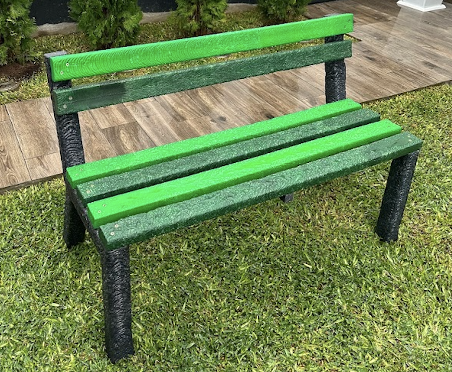

Our Mission
We collect, shred, and transform local plastic waste into durable, meaningful products for our community while advancing plastic recycling knowledge.


Student-led initiative creating durable products from recycled plastics
Get InvolvedWe collect, shred, and transform local plastic waste into durable, meaningful products for our community while advancing plastic recycling knowledge.